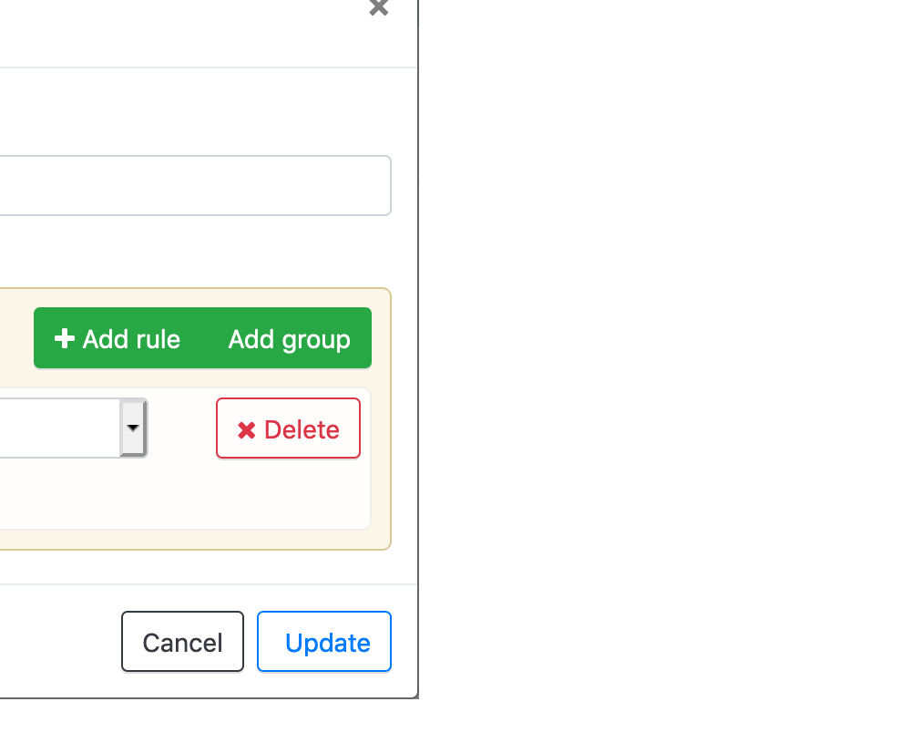
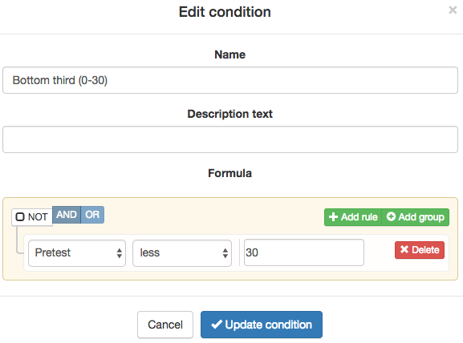
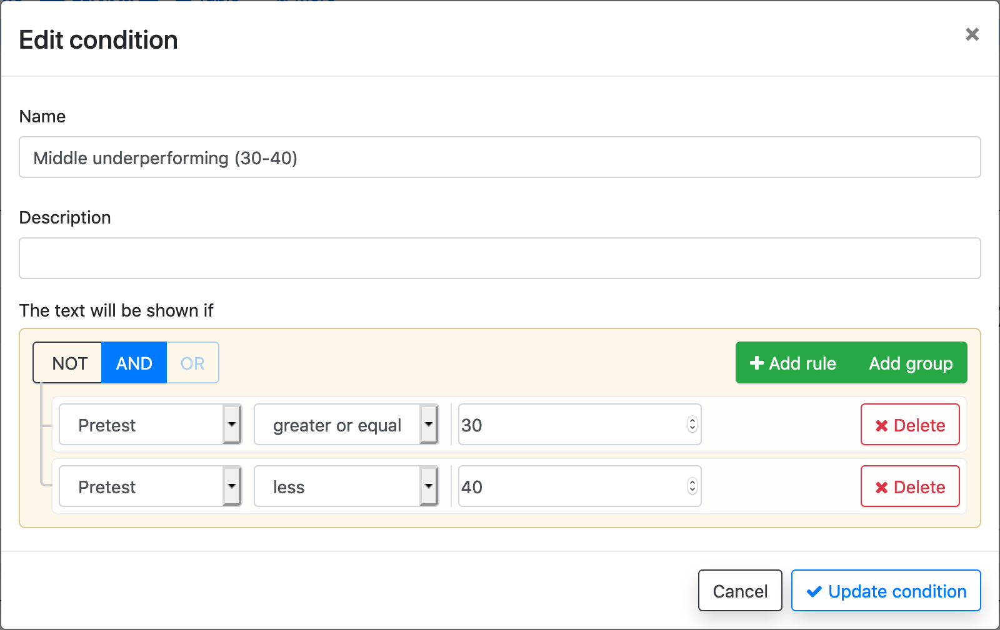
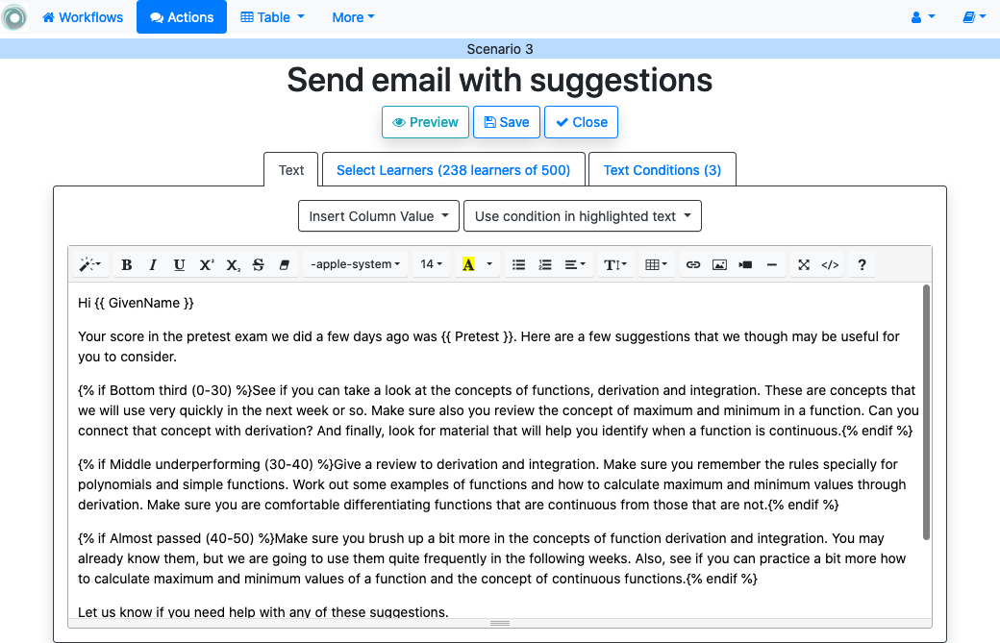
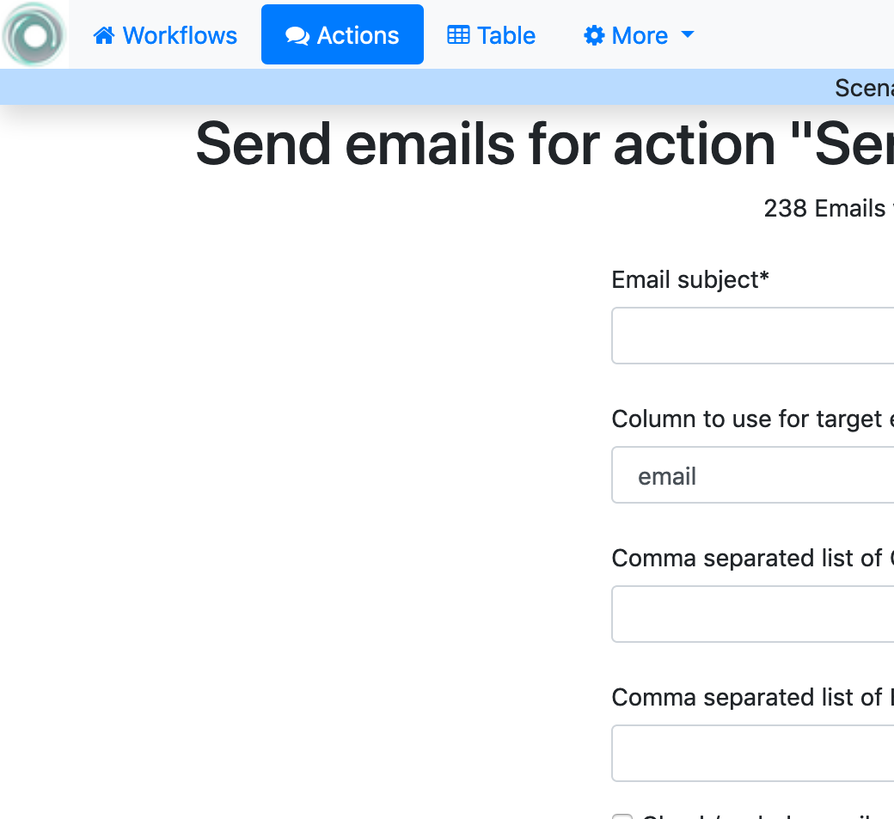

4.3. Scenario 3: Send email to some students with personalised text¶
CSV data file:
Scenario 3 Data File.Workflow data file:
Scenario 3 Workflow File.
Suppose you have a course with 500 students and they took a pre-test in the first week of the course. You have a CSV file with the class listing and a column with the pretest score. The column with name Pretest contains the score as a number between 0 and 100. You would like to send to those students that failed that pretest a personalized message with some suggestions about the material to revisit or improve. Additionally, these suggestions will be written differently depending on the score. You envision three messages. One encouraging more basic review for the scores below 30, one message a bit less strong for those with scores between 30 and 40, and a message based more on suggestions for those with scores between 40 and 50.
Steps
Create a new workflow (click in the New Workflow button in the home page of the tool). Introduce a name and a description (optional) for this workflow.
Open the newly created workflow by clicking its name. A page titled Workflow Details will be shown.
The page says that there is no data uploaded yet, and to upload it you need to click in the Dataops link either at the bottom of the text or at the context menu at the top.
A new page titled Upload/Merge appears. Select the option CSV Upload/Merge and follow the instructions to upload the
CSV file(select all the columns to upload)Click the Details page to see a summary of the elements in the workflow: 500 rows, 10 columns, 1 action and 0 attributes. All the steps up to here can be done by
importing the given workflow file.Click the Table link at the top of the page and browse through the data included in the workflow. Locate the column called Pretest and verify that it has the scores between 0 and 100.
Click the Actions link at the top of the page. The new page shows a list of actions available for this workflow. Click on the button to create a New Action Out to send the email with suggestions to the students that failed the pretest. Choose an name and description (optional) for the action, for example Send email with suggestions.
The next page is the action out editor. The are at the has the name Filter and is to define a condition to filter only a subset of the students. In this scenario, for this action, we want to consider only those students that have failed the pretest, or in other words, the pretest score is below 50. Click the Add Filter button and introduce this condition as shown in the following figure:
The next step is to define a condition to identify those students for which the score in the pretest is less than 30. In the second area from there is a button to create a new condition (Conditions + New). Click the button and a new window opens to specify a condition. Enter the condition as shown in the following picture:
Repeat the same operation (add another condition), but this time the condition is that the pretest score is larger or equal to 30 and lower than 40. The second condition can be added clicking in the Add Rule button. The result should be like the one shown in the following figure:
Create a third condition, but this time the rule should state that the pretest condition is larger or equal to 40.
The next step is to write the body of the email starting with a greeting that includes the student’s name and a sentence communicating the pretest score. Use the pull down menu labelled Insert column name to insert the column name.
Write three paragraphs for each of the categories of score. For each of them, select it, select the pull down menu of the appropriate condition, and click the option Insert in text. The text should be surrounded with some special mark-up such as
{% if Bottom third (0-30) %}as shown in the following figure:Use the preview button with the arrows to see how the different emails are shown (only for the students that satisfy the condition of the filter).
Save and close the Action Out. You now are back to the screen showing the actions in the workflow (you can see the one we just created). If you click in the Email button, you will be asked for some extra data such as the email subject, the column to use as email address and some options to track email reading or even obtain a snapshot (duplicate) of the workflow as it is right now for future reference.
That’s it! Those students that failed the pretest will receive a message with some suggestions framed according to their score.